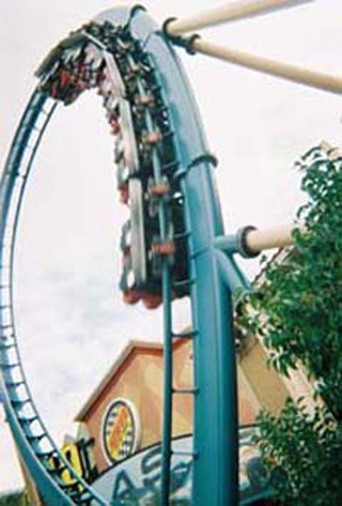

| |

Speed the Ride Review

For todays review, we're going to travel back in time to the year 2004, when I was last in Las Vegas and rode Speed the Ride. Yes, it was a long time ago, but I'll explain it as best as I can. I came to the Nascar Cafe while everyone else went shopping. As I got my unlimited wristband, I walked up the stairs and into the ghetto station. I remember climbing in the car, pulling down the shoulder harnesses and waiting. Yes, One thing I remembered crystal clear were the operations on this ride. They checked the restraints, but then then they just sat there. They were done, but they said it wasn't time to launch the ride yet. So we just had to sit and wait for 5 long minutes that felt like hours. What the hell? These operations were Mt. Olympus bad. So while I'm sad that the coaster is gone, at least these operations are now gone as well. Eventually, the train launched and we were on our way (About damn time as well). After a truly crappy launch, we went into an overbanked turn that went into a tunnel. After that, you go up into a loop, you get a little bit of hangtime in the loop thanks to the ridiculously slow speed. However, right after the loop, you get a very nice suprise. A second launch comes in and kicks the train up to 70 mph!!! At this point, you are just really happy from the adrenaline from the speed, then after flying through a turn, you see a big spike. And then, you climb. Higher and Higher you go, You soon stop at the top of the spike (If you look to the side, you'll get a decent veiw of Las Vegas). Then we fall. Down lower to the ground, accelerating faster and faster, we then level out and travel the entire course backwards. Unfortunately, you get a nasty suprise. The LIMs that propelled you foreward also act as giant trim breaks, slowing you down back to your original pathetic speed. Then we crawl through the loop and inch our way back to the station. Speed was truely a fun ride, despite the awful trims at the end and the ridiculous operations. Its truly a shame since this was the best coaster in Nevada. Now that title goes to Desperado. I would've recommend riding this, but yeah. Its dead. The ride is currently sitting in peices at a place in Las Vegas called Akita Plaza. They say they want to re-build Speed, but I haven't seen any signs of construction yet. Hoping that this follows through and Speed lives on.
8/10
Location: Nascar Cafe
Opened: 2000
Died: May 2011
Built by: Premier
Last Ridden: October 24, 2004
Speed the Ride Photos
Home
|